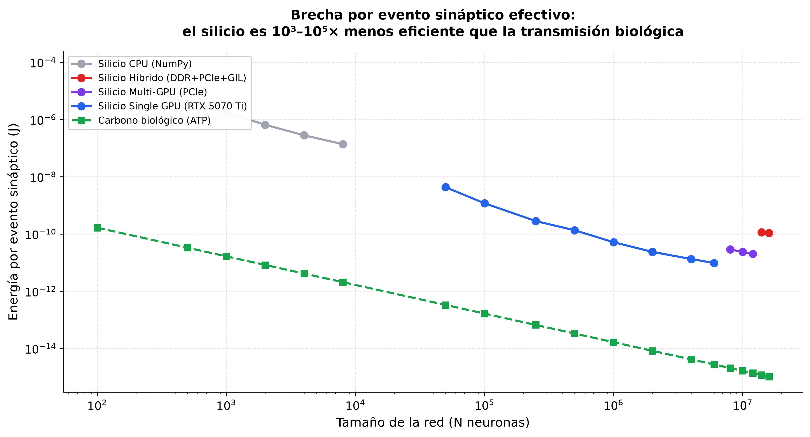
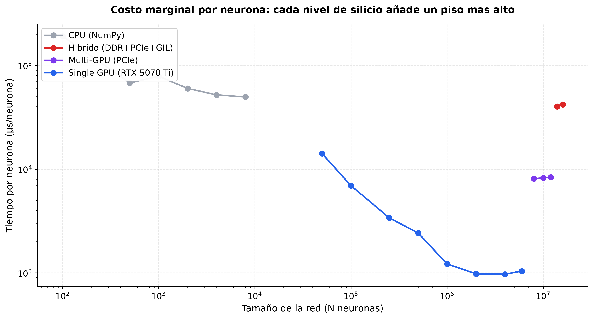
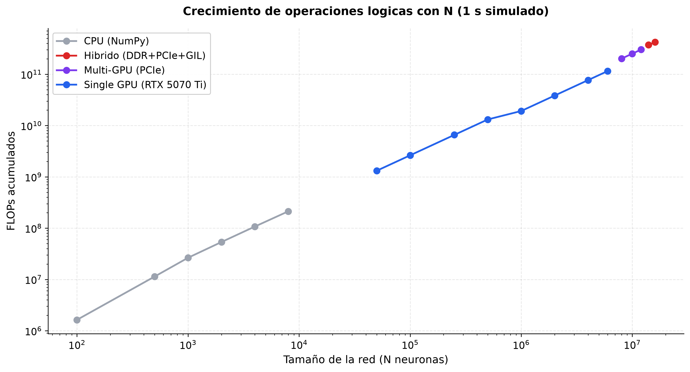
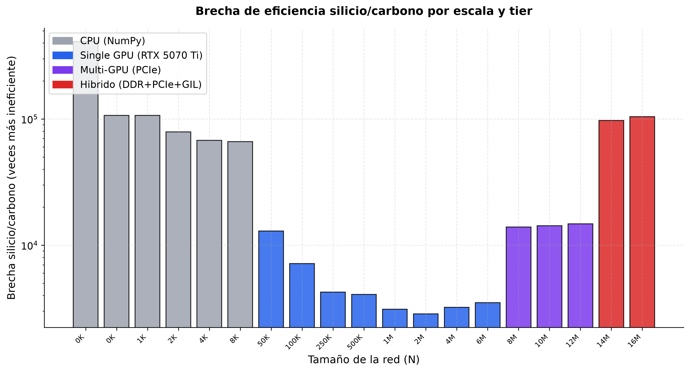
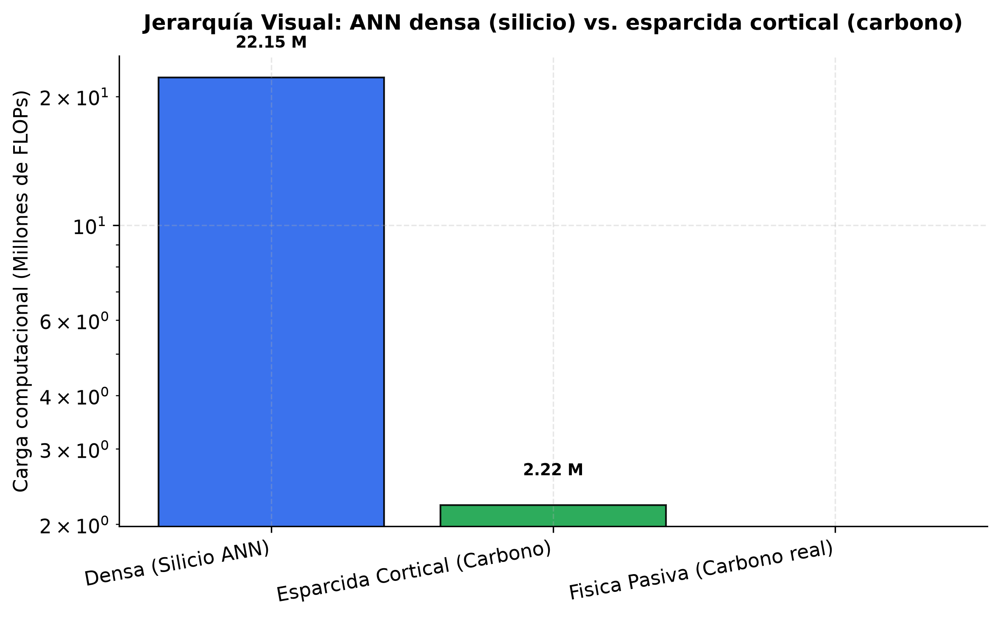

Filosofía de las Neurociencias
Dashboard del laboratorio: 4 tiers de hardware (CPU → Single GPU → Multi-GPU → Híbrido) ponen en evidencia el cuello de botella de Von Neumann y la ineficiencia termodinámica del silicio digital frente al carbono orgánico.
Acerca del Laboratorio
Este laboratorio computacional actúa como anexo científico empírico del ensayo. La arquitectura de 4 tiers es deliberadamente ineficiente: cada nivel expone un cuello de botella físico distinto (Python loop, VRAM, PCIe, DDR+GIL). Los números resultantes demuestran que agregar más silicio no resuelve el problema termodinámico fundamental de emular la mente biológica, solo lo desplaza a otro cuello de botella. La brecha silicio/carbono observada está entre 3.000× y 100.000× en consumo por evento sináptico efectivo.
📈 Gráficos del benchmark escalonado
Tiempo de cómputo por tier

Cada nivel de hardware introduce una nueva "escalera" de ineficiencia: el PCIe añade ×10 al pasar de single GPU 6M a multi-GPU 8M; el DDR+GIL del híbrido lleva a 10+ minutos para 14M neuronas.
Energía silicio vs. carbono

El silicio digital clásico consume entre 10³ y 10⁵ veces más energía que el cerebro biológico para realizar el mismo cómputo. La brecha aumenta con N y con cada tier de hardware.
Energía por evento sináptico

Por evento sináptico efectivo (J/evento): el silicio es 3×10⁻¹¹ J mientras el carbono consume ~1.7×10⁻¹⁵ J. Tres órdenes de magnitud de ineficiencia constante.
Tiempo por neurona añadida

El costo marginal por neurona añadida NO baja con escala (como predice el software): sube en cada nuevo tier. Multi-GPU está muy por encima de single GPU por neurona.
FLOPs acumulados por simulación

El cómputo lógico escala linealmente con N dentro de cada tier, pero las curvas se desplazan hacia arriba con cada tier adicional: más silicio = más cómputo.
Mapa de la brecha silicio/carbono

Barras con la brecha de ineficiencia (escala log) para cada corrida. Los tiers híbridos presentan los peores ratios (>10⁵×) porque la subred CPU penaliza brutalmente.
🧠 Los 6 Experimentos Biofísicos
Jerarquía Visual (Zeki)

Corteza visual jerárquica V1→IT con esparcimiento retinotópico del 10% reduce los FLOPs un 90% frente a la conexión densa.
Células de Concepto (Quian Quiroga)

Con WTA del 1% (carbono) el solapamiento entre conceptos cae de 80% (silicio) a ~1%, eliminando el crosstalk de memoria.
Diversidad Neuroquímica (LeDoux)

Añadir 15 canales químicos a una neurona HH eleva los FLOPs linealmente en silicio. En carbono, el costo marginal es cero.
Oscilaciones Gamma (Bechtel)

La red cortical con 80/20 E/I y retardos axonales genera oscilaciones colectivas en la banda gamma. FFT muestra el pico emergente.
Plasticidad STDP (Hinton)

STDP local usa 39 KB de memoria de estado; backpropagation usa 20 MB. Reducción del 99.8%.
Computación Morfológica (Webb)

Localización de sonido: 757.760 FLOPs (silicio FFT) vs. 2 FLOPs (cuerpo del grillo). Reducción 99.9997%.